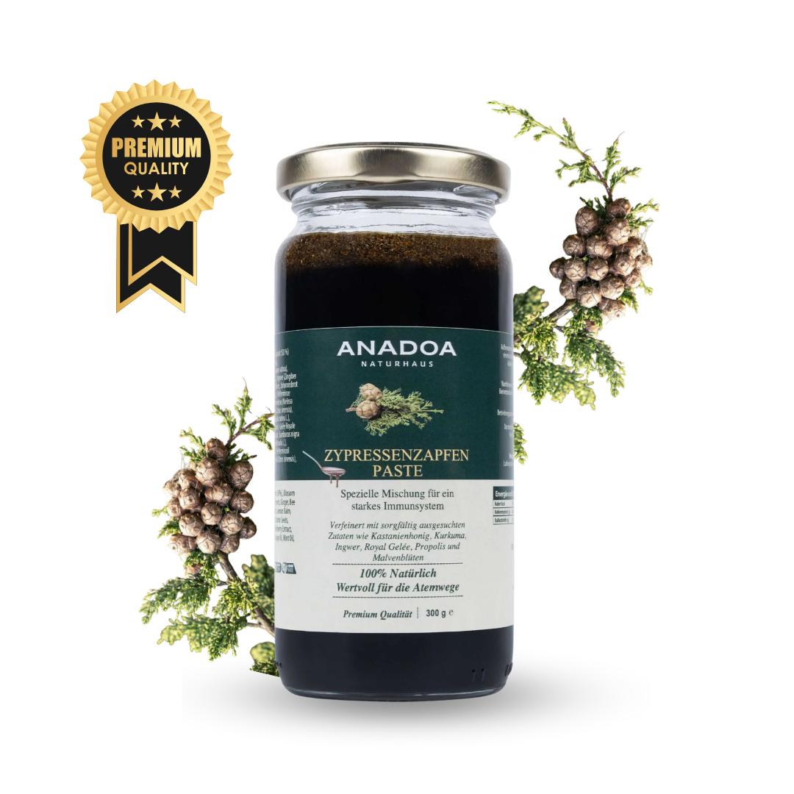
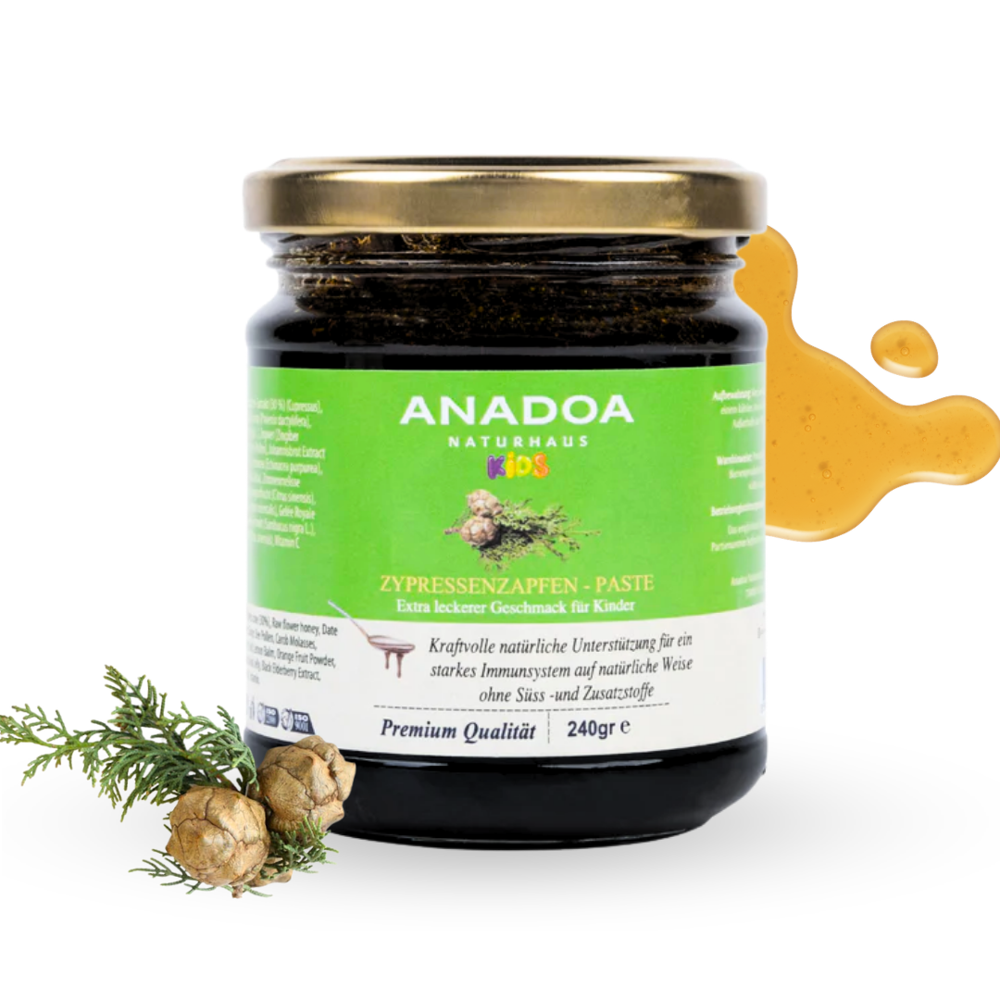
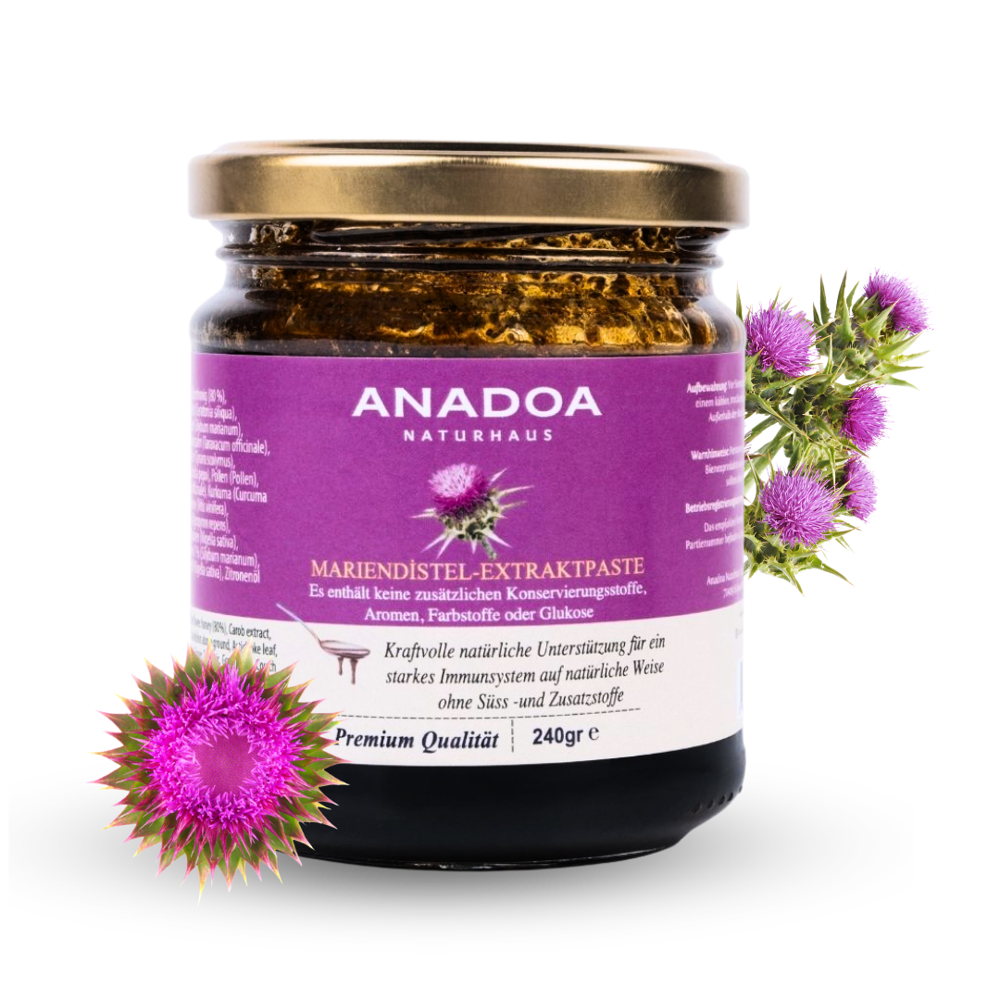
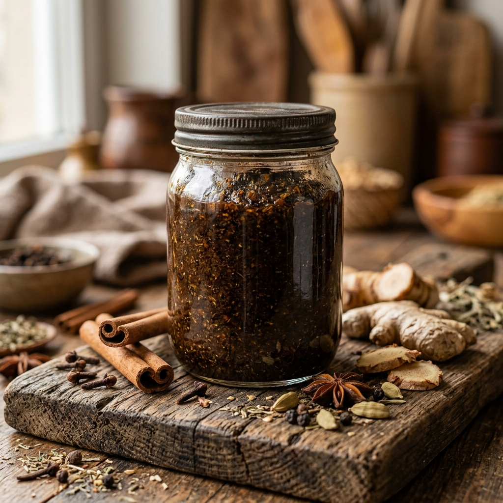
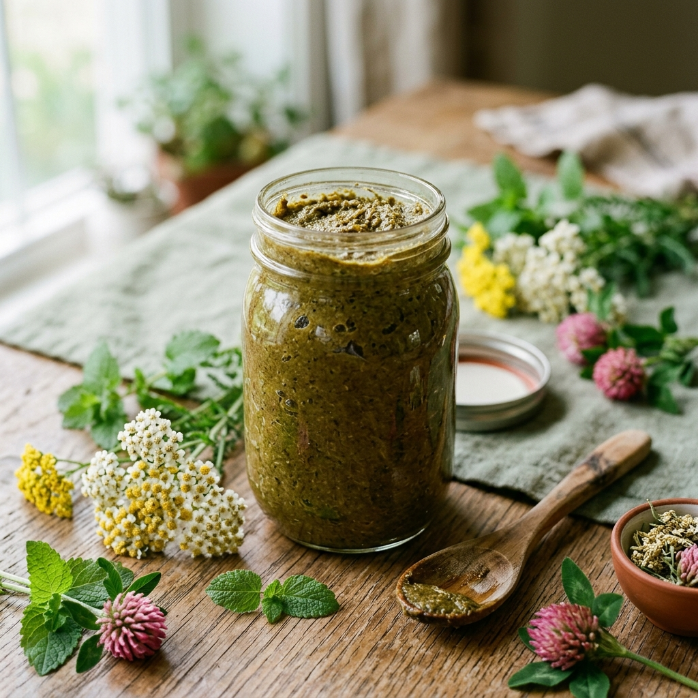
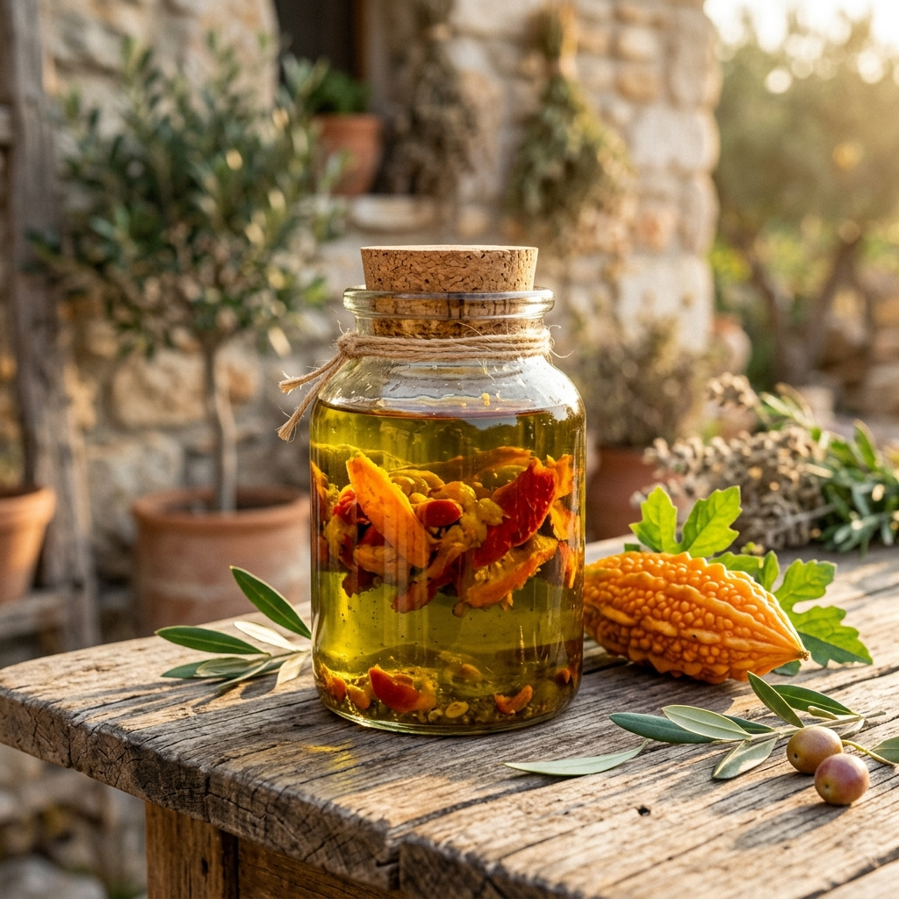

Die Macun Tradition Anatoliens: Heilkunde zum Löffeln
Die anatolische Pflanzenheilkunde, geprägt von den tiefen Einflüssen der antiken, islamischen und osmanischen Medizin, hat eine einzigartige Form der Phytotherapie hervorgebracht: den "Macun". Ein Macun (ausgesprochen: Madschun) ist nicht einfach nur ein süßer Brotaufstrich. Es ist eine jahrhundertealte Methode, um hochpotente Heilkräuter, harzige Extrakte, Wurzeln und Samen haltbar und gleichzeitig für den menschlichen Körper optimal verwertbar zu machen. In der Vergangenheit nutzten Palastärzte den Honig und die Melasse nicht nur als Süßungsmittel, sondern als Trägersubstanzen (Vehikel), um pflanzliche Wirkstoffe direkt ins Blut und in die tiefen Gewebeschichten zu transportieren.
Im Anadoa Naturhaus greifen wir diese ehrwürdige Tradition auf. Unsere Pasten sind therapeutisch formulierte "Gıda Takviyeleri" (Nahrungsergänzungsmittel), bei denen die rohe Pflanzenkraft in ihrer natürlichen Matrix erhalten bleibt. Wir lehnen den Einsatz von billigem Glukosesirup, künstlichen Konservierungsstoffen oder Aromen kategorisch ab. Jede unserer Pasten ist ein komplexes phytochemisches Meisterwerk, entworfen, um gezielt spezifische Systeme des Körpers zu nähren, zu entgiften und zu stärken.
Unsere Kräuterpaste-Kollektion

Zypressenzapfen Paste
Tannenzapfenpaste - 100 % natürliche Rezeptur zur Unterstützung von Immunsystem, Vitalität & Wohlbefinden.
In den Warenkorb
Tannenzapfen Paste für Kinder
Milde, honigbasierte Zypressenzapfen-Mischung zur natürlichen Stärkung der kindlichen Atemwege.
In den Warenkorb
Mariendistel Paste
Natürliche Kräuterpaste mit Silymarin zur Unterstützung der Leberfunktion und der natürlichen Entgiftung.
In den Warenkorb
Paste für Männer | Mesir Macunu
Traditionelle Kräuterpaste mit wärmenden Gewürzen zur Förderung von Vitalität, Energie und Ausdauer.
In den Warenkorb
Paste für Frauen | Kadın Macunu
Ausgleichende Kräutermischung zur sanften Harmonisierung des weiblichen Zyklus.
In den Warenkorb
Bittermelone Paste mit Honig
Kudret Narı in Honig – das bewährte anatolische Hausmittel zur Beruhigung von Magen und Darm.
In den Warenkorb
Tahini | Sesammus
100% reines, schonend geröstetes Tahini aus anatolischem Sesam. Reich an Kalzium und Eisen.
In den Warenkorb
Bittermelone Paste mit Olivenöl
Die intensive Kudret Narı Mazeration in kaltgepresstem Olivenöl zur Magenpflege.
In den WarenkorbDie Zypressenzapfen Paste: Atemwege und Resilienz
Ein herausragendes Beispiel für die Kraft der anatolischen Macun-Kunst ist unsere Zypressenzapfen Paste. Während in der westlichen Welt oft nur einfache Fichtennadeln genutzt werden, fokussiert sich unsere Spezialität auf den Zypressenzapfen (Servi Kozalağı). Zypressenzapfen sind außerordentlich reich an spezifischen Terpenen, Pinenen und ätherischen Ölen, die traditionell bei tiefsitzendem Husten, bronchitischen Reizzuständen und als allgemeines Tonikum für die Atemwege angewendet werden.
Durch die behutsame Mazeration der Zapfen in Honig und Pflanzenextrakten entsteht eine Paste, die besonders in der kalten Jahreszeit ihre wahre Stärke ausspielt. Die Zypressen-Wirkstoffe besitzen schleimlösende und leicht antibakterielle Eigenschaften. Es gibt sie auch in einer speziellen Formulierung für Kinder (Tannenzapfen Paste für Kinder), die geschmacklich milder ist, aber denselben schützenden Effekt auf die zarten Atemwege der Kleinsten bietet.
Bittermelone (Kudret Narı): Der Balsam für Magen und Darm
Eines der faszinierendsten Gewächse der Naturheilkunde ist die Bittermelone (Momordica charantia), in der Türkei als "Kudret Narı" bekannt. Optisch anmutend wie ein drachenartiges Gewächs, birgt sie in ihrem Inneren blutrote Samen und ein Fruchtfleisch, das seit Generationen als ultimativer Balsam für den gesamten Gastrointestinaltrakt (Magen-Darm-Trakt) gilt.
Unsere Kudret Narı Paste wird in zwei Premium-Varianten angeboten: eingelegt in rohen Honig oder in hochwertigem, kaltgepresstem Olivenöl. Die Bittermelone enthält bioaktive Substanzen wie Charantin und Momordicin. Diese Stoffe sind dafür bekannt, die Regeneration entzündeter Magenschleimhäute zu fördern, bei Reflux lindernd zu wirken und die Wundheilung von Magenulzera traditionell zu unterstützen. Ein Teelöffel dieser Paste am frühen Morgen, auf nüchternen Magen, bildet eine schützende Schicht an der Magenwand und bereitet das Verdauungssystem beruhigend auf den Tag vor.
Mariendistel Paste: Die Renaissance der Leber
Die Leber ist das wichtigste Entgiftungsorgan unseres Körpers. In einer modernen Welt voller Umweltgifte, verarbeiteter Lebensmittel und Stress ist die Leber oft überlastet. Hier kommt die Mariendistel (Silybum marianum) ins Spiel. Ihr Hauptwirkstoff, der Silymarin-Komplex, ist eines der am besten erforschten pflanzlichen Hepatoprotektiva (leberschützenden Mittel) weltweit. Silymarin fängt nicht nur freie Radikale ab, sondern verändert die äußere Zellmembran der Leberzellen (Hepatozyten) so, dass Lebergifte nicht in das Zellinnere eindringen können. Zudem fördert es die Proteinsynthese und damit die Neubildung gesunder Leberzellen.
Unsere Anadoa Mariendistel Paste kombiniert hochkonzentrierte Extrakte der Mariendistelsamen mit einer nährenden Basis. Anstatt isolierte Kapseln zu schlucken, nehmen Sie mit dieser Paste die Synergie der ganzen Pflanze auf. Sie eignet sich hervorragend als begleitende Unterstützung bei Entgiftungskuren (Detox), nach Medikamenteneinnahme oder als generelles Tonikum im Frühjahr, wenn der Körper nach Reinigung verlangt.
Gezielte Vitalität: Pasten für Frau & Mann (Mesir Macunu)
Die Tradition der anatolischen Hofmedizin gipfelt in den adaptogenen und stärkenden Vitalitäts-Pasten. Bekannt unter dem historischen Namen "Mesir Macunu" oder als spezifische "Erkek Macunu" (Für Männer) und "Kadın Macunu" (Für Frauen), vereinen diese Pasten oft bis zu über 40 verschiedene Kräuter, Rinden und Gewürze. Dazu gehören wärmende Elemente wie Ingwer, Galgant, Zimt, Nelken, aber auch stark adaptogene Wurzeln wie Ginseng oder Epimedium (Elfenblume).
Diese komplexen Kräuterpasten sind keine simplen Energielieferanten. Sie wirken tiefgreifend auf das Endokrine System (Hormonsystem) und das zentrale Nervensystem. Die Paste für Männer zielt auf Durchblutungsförderung, Stressresistenz und physische Ausdauer ab. Die Paste mit Kräuterextrakten für Frauen fokussiert sich hingegen auf den Ausgleich des hormonellen Rhythmus, die Linderung von Menstruationsbeschwerden und die allgemeine Stärkung des weiblichen Organismus bei Erschöpfung (Fatigue) oder Anämie.
Reines Tahini: Das pflanzliche Kraftwerk
Ein unverzichtbarer Bestandteil der anatolischen Ernährung ist unser hochwertiges Tahini (Sesammus). Unser kaltgepresstes Tahini ist ein reines Superfood, randvoll mit Kalzium, Magnesium, Eisen und gesunden Fetten. Es wird aus sorgfältig geröstetem, regionalem Sesam gewonnen und bietet eine herrlich cremige, nussige Basis für süße und herzhafte Speisen. Die ungesättigten Fettsäuren des Sesams unterstützen das Herz-Kreislauf-System und machen es zu einer perfekten veganen Proteinquelle für den täglichen Bedarf.
Häufig gestellte Fragen (FAQ)
Was genau ist
ein traditioneller anatolischer Macun (Paste)?
Ein Macun ist eine traditionelle pflanzliche Paste, bei der hochwirksame Heilkräuter, Wurzeln und Samen in natürlichen Trägerstoffen wie Honig, Pekmez (Melasse) oder kaltgepressten Ölen mazeriert werden, um ihre Bioverfügbarkeit zu maximieren.
Wie dosiere ich
die Bittermelone (Kudret Narı) Paste für den Magen?
Traditionell wird ein Teelöffel der Bittermelone Paste morgens nüchtern, etwa 30 Minuten vor dem Frühstück eingenommen, um die Magen-Darm-Schleimhaut optimal auf den Tag vorzubereiten.
Enthalten die
Pasten von Anadoa Naturhaus raffinierten Zucker?
Nein. Wir verzichten strikt auf industriellen Glukosesirup oder raffinierten Zucker. Die Süße und Konservierung unserer Pasten erfolgt ausschließlich durch hochwertigen Honig, natürliche Fruchtextrakte oder kaltgepresstes Olivenöl.
Kann ich die
Mariendistel Paste zur täglichen Leberpflege nutzen?
Ja, Mariendistel (Silybum marianum) enthält den Wirkstoff Silymarin. Eine kurmäßige Anwendung über mehrere Wochen wird traditionell sehr geschätzt, um die Leber bei der natürlichen Regeneration und Entgiftung zu unterstützen.
Sind spezielle
Mischungen wie die Kadın Macunu (Frauenpaste) sicher?
Unsere speziellen Mischungen basieren auf überlieferten phytotherapeutischen Rezepturen. Da sie jedoch starke Pflanzenextrakte enthalten, sollten Schwangere oder Personen unter ärztlicher Behandlung vor der Einnahme stets ihren Therapeuten konsultieren.